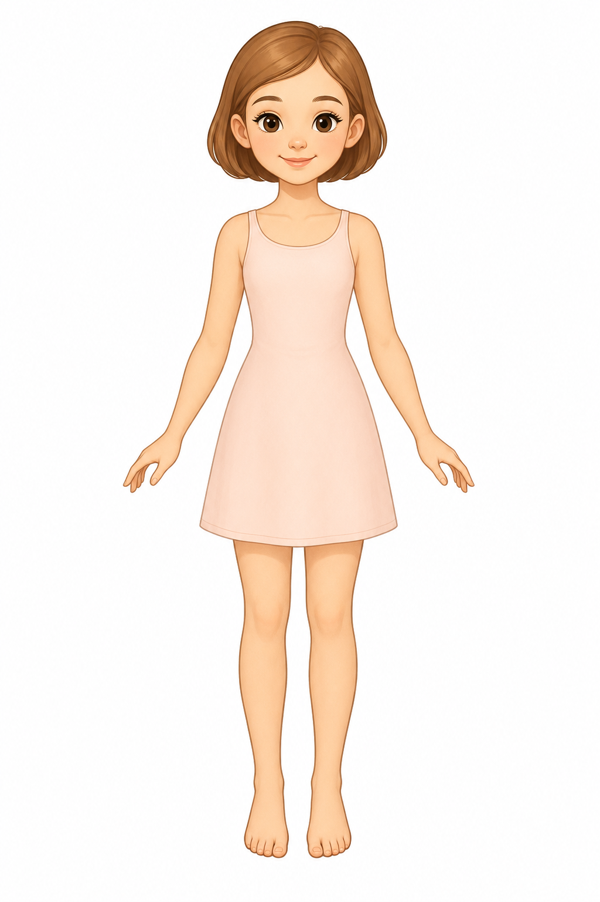
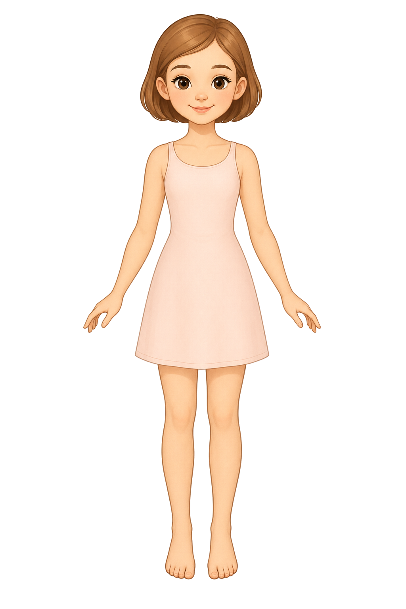
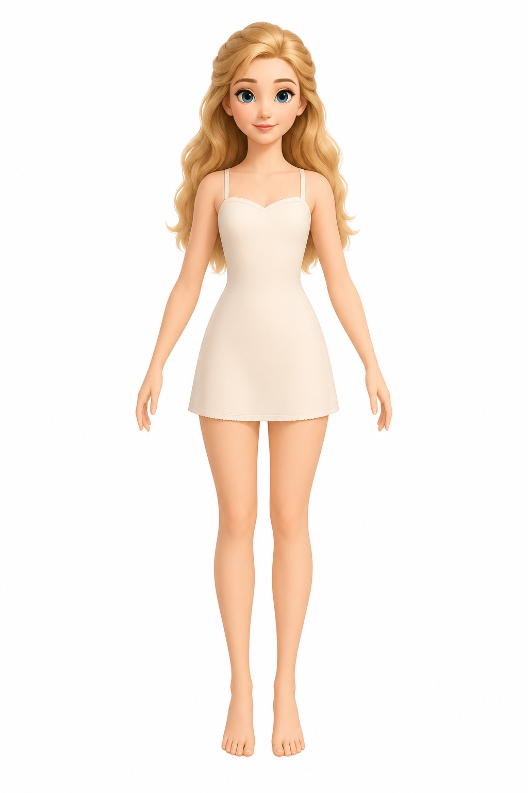
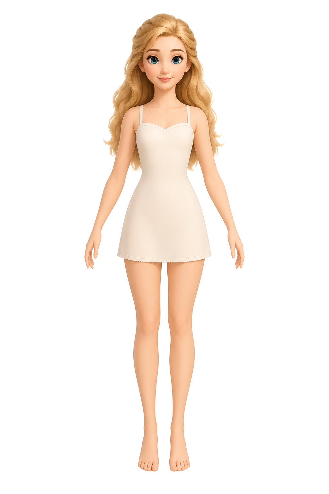
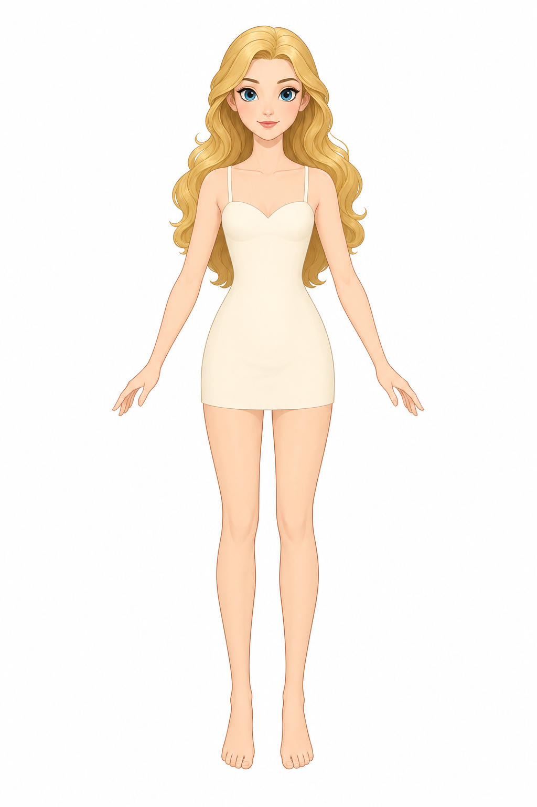
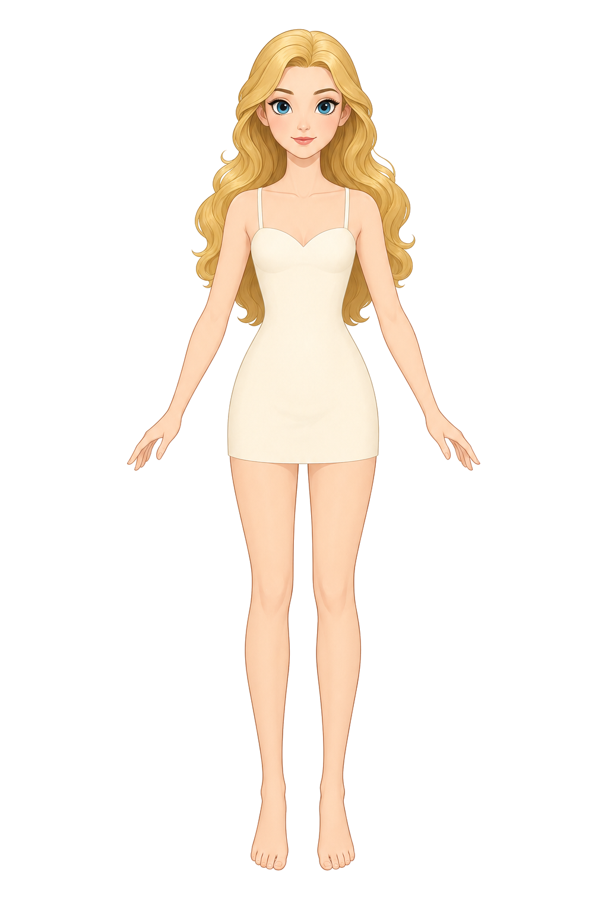

Generated with gpt-image-2. Raw images live in model-candidates/raw; cutouts live in model-candidates/cutout.
A: storybook paper doll
model-princess-base-b-validation-a.png
ok
Raw

Cutout

cute storybook encyclopedia paper doll mannequin for a princess dress-up game, non-realistic 2D illustration, front view, full body, standing straight and centered, modest rounded proportions, soft friendly face, light brown short bob hair kept above the shoulders and away from the torso, arms slightly away from the body for clean outfit overlays, visible neck, shoulders, waist, ankles, and toes, simple pale cream-pink sleeveless inner dress with a modest round neckline below the neck so necklaces can be tested, clear silhouette for dress-up validation, plain pure white background, no props, no text, no watermark
B: slightly softer pose
model-princess-base-b-validation-b.png
ok
Raw

Cutout

dress-up game base model inspired by model-princess-base-b, exact front view, full body, standing straight, arms gently away from the body, neck, shoulders, waist, ankles, and toes clearly visible, hair not covering the torso, simple pale inner dress, tidy princess doll proportions, elegant but practical dress-up base silhouette, plain pure white background, no props, no text, no watermark
C: flatter illustration feel
model-princess-base-b-validation-c.png
ok
Raw

Cutout

dress-up game base model inspired by model-princess-base-b, front view, full body, centered and symmetrical, arms slightly away from the body, visible neck, shoulders, waist, ankles, and toes, hair arranged so it does not cover the torso, simple pale inner dress, clean 2D illustration with a clear dress-up silhouette, readable and stable for clothing overlays, plain pure white background, no props, no text, no watermark